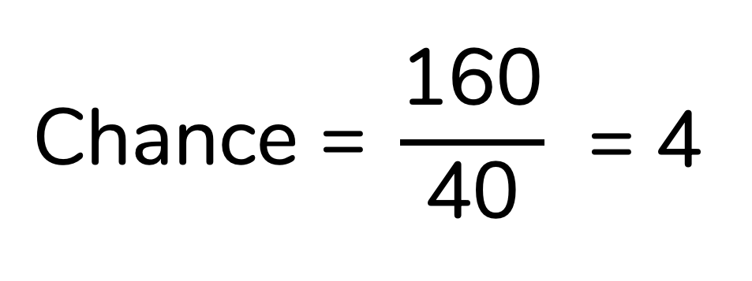

No dia-a-dia, é comum usarmos os termos chance e probabilidade como sinônimos. “Qual a chance de eu ganhar na mega da virada?”, você provavelmente já se perguntou alguma vez. Mas na estatística, chance e probabilidade significam coisas consideravelmente diferentes. E confundi-las vai levar a uma interpretação errada dos seus resultados, principalmente ao rodar modelos de regressão logística. Nesse post, vamos entender de uma vez por todas o que esses dois conceitos significam.
O que é probabilidade?
Antes de discutirmos o que é chance, precisamos definir probabilidade. Essa não é uma tarefa tão simples, porque há mais de uma definição de probabilidade. Por exemplo, na escola você aprendeu a probabilidade clássica – aquela, que a gente geralmente ensina usando dados e moedas como exemplo.
A probabilidade clássica é calculada dividindo-se a quantidade de casos favoráveis pelo total de possibilidades. Como assim? Imagine que queremos saber a probabilidade de sair um número maior ou igual a 5 em um dado. Nesse caso, nosso evento de interesse é “sair um número ≥ 5”. Há dois “casos favoráveis” (isso é, resultados que correspondem ao nosso evento de interesse): 5 e 6. E, no total, temos seis possibilidades de resultados. Logo, essa probabilidade será calculada como:

Ou seja, chegamos a uma probabilidade de 0,333. Esse valor também pode ser pensado em porcentagem, basta que ele seja multiplicado por 100:
0,333 x 100 = 33,3%
Essa forma de calcular probabilidade é útil, mas bastante limitada, porque se aplica apenas a eventos equiprováveis – ou seja, a situações em que todos os eventos têm a mesma probabilidade de ocorrer, como é o caso do lançamento de um dado ou de uma moeda não viciados.
Perceba como não faz sentido aplicarmos esse raciocínio a outras situações. Vamos imaginar que queremos saber a probabilidade de um bebê nascer prematuro (sem termos qualquer outra informação sobre o bebê ou sua mãe). Se formos seguir a probabilidade clássica, discutida acima, nosso raciocínio seria:
- Temos duas (2) possibilidades ao total: parto prematuro e parto não-prematuro.
- Queremos saber a probabilidade de uma (1) das possibilidades, logo:

Ou seja, seguindo essa raciocínio consideraríamos que há 50% de probabilidade de um parto ser prematuro. Mas essa raciocínio está errado! Isso porque a probabilidade de um parto ser prematuro é bem menor que a probabilidade de ele não ser prematuro. Esses dois eventos não são equiprováveis. Como calcular a probabilidade nessas situações, então?
É aqui que entra a probabilidade frequentista, que se baseia na frequência de ocorrência do evento. Na estatística clássica usamos essa definição de probabilidade – até por isso essa estatística é também chamada de estatística frequentista.
Imagine que fizemos uma pesquisa e descobrimos que ocorreram 2.621.015 partos no Brasil em 2022. Desses, 314.518 foram prematuros. Sabendo dessas informações podemos calcular a probabilidade de um parto ser prematuro como:

Aplicando os valores que encontramos à fórmula, temos:
Portanto, a probabilidade de um parto prematuro no Brasil em 2022 é de 0,12.
Aqui também podemos pensar em porcentagem. Lembrando que para isso basta multiplicar o valor por 100:
0,12 x 100 = 12%
Ou seja, há uma probabilidade de 12% de um parto ser prematuro nesse cenário.
Mais um exemplo…
Vamos imaginar que coletamos uma amostra de homens e mulheres e os classificamos quanto ao seu hábito de fumar. Os resultados estão resumidos na tabela abaixo:
Agora, tente responder o seguinte: qual a probabilidade de uma mulher dessa amostra não ser fumante?
Reforçando: aqui vamos usar a estatística clássica e, portanto, consideraremos que probabilidade é sinônimo de frequência. Vamos, então, calcular a frequência de mulheres não-fumantes nessa amostra.
Perceba que a amostra inclui 200 mulheres, sendo 160 delas não-fumantes:

A probabilidade de uma mulher dessa amostra não ser fumante é dada pela frequência de mulheres não-fumantes, ou seja:
Essa notação “P(não-fumante | mulher)” é a notação que usamos para probabilidades condicionais – isso é, que se baseiam em uma condição. A barra vertical ( | ) significa “dado que”. Portanto, lemos “P(não-fumante | mulher)” como probabilidade de não ser fumante dado que é uma mulher.
Adicionando os valores à fórmula, temos:

Ou seja, a probabilidade de uma mulher dessa amostra não ser fumante é de 0,8 ou 80%.
Ok, para finalizar esse raciocínio, quero que a gente calcule a probabilidade de uma mulher dessa amostra ser fumante. Perceba que a amostra inclui 200 mulheres, sendo 40 delas não-fumantes:

A probabilidade de uma mulher dessa amostra ser fumante é dada pela frequência de mulheres fumantes, ou seja:

A probabilidade de uma mulher dessa amostra ser fumante é, portanto, de 0,2 ou 20%.
Ah, um cuidado importante aqui: probabilidades condicionais não podem ser invertidas. O que eu quero dizer com isso? Que a probabilidade de não ser fumante dado que é uma mulher é diferente da probabilidade de ser uma mulher dado que não é fumante:
P(não-fumante | mulher) ≠ P(mulher | não-fumante)
Para isso fazer mais sentido, vamos calcular a probabilidade de ser uma mulher dado que é não-fumante, P(mulher | não-fumante):

Note que chegamos a probabilidades diferentes!
Probabilidades de eventos complementares
Os eventos “não ser fumante” e “ser fumante” são o que chamamos de eventos complementares. Isso porque, em conjunto, incluem todas as possibilidades: ou a mulher é fumante ou ela não é fumante, não há outras opções.
A soma das probabilidades de eventos complementares dá 100% – ou 1, se representarmos a probabilidade em decimal. Perceba como isso é verdade para os dados do nosso exemplo:

Por isso, se representarmos a probabilidade de não ser fumante como p, a probabilidade de ser fumante pode ser representada como 1 – p:

Por enquanto, guarde essa informação. Ela vai voltar ao longo do texto, quando formos definir chance.
Probabilidades variam de 0 a 1
Antes de encerrarmos a nossa definição de probabilidade, quero chamar a sua atenção para o fato de que qualquer probabilidade estará entre 0 e 1 – ou, pensando em porcentagem, entre 0% e 100%.
Isso porque o denominador do cálculo da porcentagem é o total, o que torna impossível valores acima de 100%.
Ok, mas o que é chance afinal?
A chance é uma razão entre probabilidades.
Se queremos saber a chance uma mulher não ser fumante, devemos dividir a probabilidade de ela não ser fumante pela probabilidade de ela ser fumante:

Perceba que a probabilidade que vai no numerador (parte superior da divisão) é a que nos interessa. Se queremos saber a chance de uma mulher da amostra não ser fumante é a probabilidade de não ser fumante que vai no numerador. Já no denominador (parte inferior da divisão) vai a probabilidade do evento complementar ao que nos interessa.
Para os dados do nosso exemplo, temos:

Ou seja, a chance de uma mulher dessa amostra não ser fumante é igual a 4.
Como eu devo interpretar uma chance?
Essa é, provavelmente, a maior dificuldade no que diz respeito a chances. A interpretação delas, na minha opinião, não é das mais intuitivas. Se a chance de uma mulher da amostra não ser fumante é igual a 4, o que isso significa? A interpretação correta é:
“A probabilidade de uma mulher dessa amostra não ser fumante é 4 vezes a probabilidade de uma mulher dessa amostra ser fumante.”
Perceba como isso é verdade: se multiplicarmos a probabilidade de ser fumante por 4 chegamos à probabilidade de não ser fumante:
4 x 0,2 = 0,8
Ah, e cuidado para não dizer “4 vezes maior”. Isso está errado! Se quisermos montar a frase dessa forma, precisamos subtrair 1 da chance:
4 - 1 = 3
Agora, sim, podemos interpretar como “vezes maior”. Podemos dizer:
“A probabilidade de uma mulher dessa amostra não ser fumante é 3 vezes maior que a probabilidade de ela ser fumante”
Como 3, em porcentagem, corresponde a 300% (3 x 100 = 300%), podemos também montar a frase da seguinte forma:
“A probabilidade de uma mulher dessa amostra não ser fumante é 300% maior que a probabilidade de ela ser fumante”
Ok, Fernanda, mas e se a chance for menor que 1, como eu interpreto? Bom, a lógica segue a mesma. Mas vamos treinar com um exemplo.
Vamos agora calcular a chance de uma mulher dessa amostra ser fumante. Se queremos saber a chance uma mulher ser fumante, devemos dividir a probabilidade de ela ser fumante pela probabilidade de ela não ser fumante:

Ou seja, a chance de uma mulher dessa amostra ser fumante é de 0,25. Como interpretar esse valor? A interpretação correta é:
“A probabilidade de uma mulher dessa amostra ser fumante é 0,25 vezes a probabilidade de uma mulher dessa amostra não ser fumante.”
De novo, cuidado para não dizer “vezes maior” ou “vezes menor”. Isso estaria errado. Para montarmos a frase dessa forma, assim como fizemos com a chance maior que 1, devemos subtrair 1:
0,25 - 1 = -0,75
Perceba que o resultado dessa subtração foi negativo. Isso significa que esse valor calculado representa o quantas vezes menor é aquela probabilidade. A frase correta fica:
“A probabilidade de uma mulher dessa amostra ser fumante é 0,75 vezes menor que a probabilidade de ela não ser fumante”
Como 0,75, em porcentagem, corresponde a 75% (0,75 x 100 = 75%), podemos também montar a frase da seguinte forma:
“A probabilidade de uma mulher dessa amostra ser fumante é 75% menor que a probabilidade de ela não ser fumante”
Já disse e repito: eu não considero essa interpretação muito intuitiva. Minha sugestão? Pega um papel e esquematiza essas probabilidades e chances. Eu te garanto que vai ficar menos abstrato!
Chances variam de 0 ao infinito positivo
Perceba que, ao contrário das probabilidades, as chances não se limitam ao intervalo entre 0 e 1. Elas variam de 0 ao infinito positivo.
Isso porque o denominador do cálculo da chance não é um total – logo, valores acima de 1 são posíveis. Por outro lado, como as chances são uma razão entre probabilidades, elas nunca serão negativas, já que probabilidades nunca são negativas – isso faz com que o menor valor possível para uma chance seja zero.
Uma notação comum para chances…
Mais acima eu te contei que se representamos a probabilidade de um evento como “p”, a probabilidade do seu evento complementar pode ser representada como “1 - p”. Como a chance é a divisão entre esses eventos, podemos representá-la como:
É bem provável que você encontre a chance representada dessa forma em livros didáticos.
Chance e probabilidade são bem diferentes!
Perceba que chance e probabilidade significam coisas diferentes. E, mais do que isso, que podem corresponder a valores bem diferentes. No nosso exemplo, vimos que a probabilidade de uma mulher da amostra não ser fumante é de 0,8, enquanto a chance é 4.
Coloquialmente, chance e probabilidade podem ser tratadas como sinônimos. Mas na estatística elas não são. Interpretar chance como probabilidade, ou vice-versa, vai levar a uma interpretação incorreta dos seus resultados – principalmente quando eles envolvem modelos baseados em chance, como a regressão logística.
O gráfico abaixo mostra a relação entre probabilidade e chance:

Há apenas um cenário no qual esses dois valores coincidem: quando a probabilidade é igual a zero.
Para probabilidades baixas, a chance tende a ser semelhante à probabilidade. Mas esses valores se distanciam conforme a probabilidade aumenta:
Probabilidade | Chance | Diferença |
|---|
0,000 | 0,000 | 0,000 |
0,050 | 0,053 | 0,003 |
0,100 | 0,111 | 0,011 |
0,250 | 0,333 | 0,083 |
0,500 | 1,000 | 0,500 |
0,750 | 3,000 | 2,250 |
0,900 | 9,000 | 8,100 |
Casos favoráveis x casos desfavoráveis
Para finalizar essa discussão, eu preciso te contar que é bem comum você encontrar chance sendo definida como “a razão entre casos favoráveis e casos desfavoráveis”, ou seja:
Ok, mas o que significa um caso ser favorável ou desfavorável? Casos favoráveis são aqueles que nos interessam; já os casos favoráveis são todos aqueles que não são do nosso interesse.
Vou voltar no mesmo exemplo. Se queremos calcular a chance de uma mulher da nossa amostra não ser fumante, as mulheres não-fumantes são os nossos “casos favoráveis”; já as mulheres fumantes são os nossos casos desfavoráveis. Ou seja, nosso cálculo fica:

Note que usando esse outro cálculo chegamos à mesma chance: 4. Isso não é por acaso. Os dois cálculos que vimos são equivalentes:
E, sim, esse cálculo do “casos favoráveis” divididos pelos “casos desfavoráveis” é mais direto. Talvez até por isso ele predomina em materiais didáticos. Mas, honestamente? Eu acho quando aprendemos chance dessa forma temos muito mais dificuldade de interpretá-la. Por isso eu optei aqui por construir todo o raciocínio com a fórmula da razão entre probabilidades. Mas fica aí a informação de que esses dois cálculos são equivalentes.
Como citar esse post, nas normas da ABNT
PERES, Fernanda F. Probabilidade x chance. Blog Fernanda Peres, São Paulo, 16 jun. 2025. Disponível em: https://fernandafperes.com.br/blog/probabilidade-chance/.